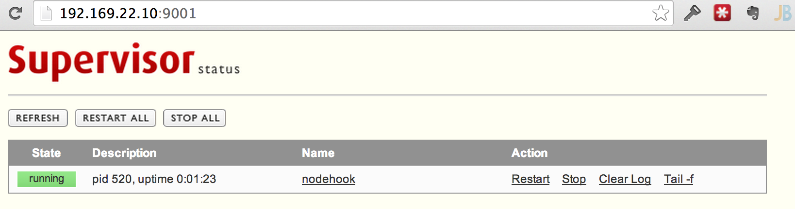

If you're interested in more of this type of content, check out the Servers for Hackers eBook!
As some point you'll likely find yourself writing a script which needs to run all the time - a "long running script". These are scripts that shouldn't fail if there's an error, or ones that should restart when the system reboots.
To accomplish this, we need something to watch these scripts. Such tools are process watchers. They watch processes and restart them if they fail, and ensure they start on system boot.
The Script
What might such a script be? Well, most things we install already have mechanisms in place for process watching. For example, Upstart or Systemd. These are tools used by many systems to watch over important processes. When we install PHP5-FPM, Apache and Nginx with our package managers, they often integrate with such systems so that they are much less likely to fail without notice.
However, we might find that we need some simpler solutions. For example, I often make use of a NodeJS script to listen to web hooks (often from Github) and take actions based on them. NodeJS can handle HTTP requests and take action on them all in the same process, making it a good fit for a small, quick one-off service for listening to web hooks.
These smaller scripts might not merit working through Upstart and Systemd (although the two are worth learning about).
Here's an example script - we'll make a quick service in Node. This NodeJS script will live at /srv/http.js:
var http = require('http');
function serve(ip, port)
{
http.createServer(function (req, res) {
res.writeHead(200, {'Content-Type': 'text/plain'});
res.write("\nSome Secrets:");
res.write("\n"+process.env.SECRET_PASSPHRASE);
res.write("\n"+process.env.SECRET_TWO);
res.end("\nThere's no place like "+ip+":"+port+"\n");
}).listen(port, ip);
console.log('Server running at http://'+ip+':'+port+'/');
}
// Create a server listening on all networks
serve('0.0.0.0', 9000);
All this service does is take a web request and print out a message. It's not useful in reality, but good for our purposes. We just want a service to run and monitor.
Note that the service prints out two environmental variables: "SECRET_PASSPHRASE" and "SECRET_TWO". We'll see how we can pass these into a watched process.
Supervisord
Supervisord is a simple and popular choice for process monitoring. Let's check out the package on Ubuntu:
$ apt-cache show supervisor
Package: supervisor
Priority: extra
Section: universe/admin
Installed-Size: 1485
Maintainer: Ubuntu Developers <ubuntu-devel-discuss@lists.ubuntu.com>
Original-Maintainer: Qijiang Fan <fqj1994@gmail.com>
Architecture: all
Version: 3.0b2-1
Depends: python, python-meld3, python-pkg-resources (>= 0.6c7)
Filename: pool/universe/s/supervisor/supervisor_3.0b2-1_all.deb
Size: 313972
MD5sum: 1e5ee03933451a0f4fc9ff391404f292
SHA1: d9dc47366e99e77b6577a9a82abd538c4982c58e
SHA256: f83f89a439cc8de5f2a545edbf20506695e4b477c579a5824c063fbaf94127c1
Description: A system for controlling process state
Description-md5: b18ffbeaa3a697e8ccaee9cc104ec380
Homepage: http://supervisord.org/
Bugs: https://bugs.launchpad.net/ubuntu/+filebug
Origin: Ubuntu
We can see that we'll get version 3.0b2. That latest is version 3.1, but 3.0b2 is good enough. We can get a newer version by installing manually or by using Python's Pip, but then we'd lose out on making sure all the dependencies are met, along with the Upstart setup so that Supervisord works as a service and starts on system boot.
If there's an alternative Ubuntu PPA to get the latest version, I'm unaware of it.
Installation
To install Supervisord, we can simply run the following:
sudo apt-get install -y supervisor
Installing it as a package gives us the ability to treat it as a service:
sudo service supervisor start
Configuration
Configuration for Supervisord is found in /etc/supervisor. If we look at the configuration file /etc/supervisord/supervisord.conf, we'll see at the following at the bottom:
[include]
files = /etc/supervisor/conf.d/*.conf
So, any files found in /etc/supervisor/conf.d and ending in .conf will be included. This is where we can add configurations for our services.
Now we need to tell Supervisord how to run and monitor our Node script. What we'll do is create a configuration that tells Supervisord how to start and monitor the Node script.
Let's create a configuration for it called webhooks.conf. This file will be created at /etc/supervisor/conf.d/webhooks.conf:
[program:nodehook]
command=/usr/bin/node /srv/http.js
directory=/srv
autostart=true
autorestart=true
startretries=3
stderr_logfile=/var/log/webhook/nodehook.err.log
stdout_logfile=/var/log/webhook/nodehook.out.log
user=www-data
environment=SECRET_PASSPHRASE='this is secret',SECRET_TWO='another secret'
As usual, we'll cover the options set here:
[program:nodehook]- Define the program to monitor. We'll call it "nodehook".command- This is the command to run that kicks off the monitored process. We use "node" and run the "http.js" file. If you needed to pass any command line arguments or other data, you could do so here.directory- Set a directory for Supervisord to "cd" into for before running the process, useful for cases where the process assumes a directory structure relative to the location of the executed script.autostart- Setting this "true" means the process will start when Supervisord starts (essentially on system boot).autorestart- If this is "true", the program will be restarted if it exits unexpectedly.startretries- The number of retries to do before the process is considered "failed"stderr_logfile- The file to write any errors output.stdout_logfile- The file to write any regular output.user- The user the process is run as.environment- Environment variables to pass to the process.
Note that we've specified some log files to be created inside of the /var/log/webhook directory. Supervisord won't create a directory for logs if they do not exist; We need to create them before running Supervisord:
sudo mkdir /var/log/webhook
Controlling Processes
Now that we've configured Supervisord to monitor our Node process, we can read the configuration in and then reload Supervisord, using the supervisorctl tool:
supervisorctl reread
supervisorctl update
Our Node process should be running now. We can check this by simply running supervisorctl:
$ supervisorctl
nodehook RUNNING pid 444, uptime 0:02:45
We can double check this with the ps command:
$ ps aux | grep node
www-data 444 0.0 2.0 659620 10520 ? Sl 00:57 0:00 /usr/bin/node /srv/http.js
It's running! If we check our localhost at port 9000, we'll see the output written out by the NodeJS script, including the environment variables. The environmental variables are useful if we need to pass information or credentials to our script.
If your process is not running, try explicitly telling Supervisord to start process "nodehook" via
supervisorctl start nodehook
There's other things we can do with supervisorctl as well. Enter the controlling tool using supervisorctl:
$ supervisorctl
nodehook RUNNING pid 444, uptime 0:15:42
We can try some more commands:
Get a menu of available commands:
supervisor> help
# Available commands output here
Let's stop the process:
supervisor> stop nodehook
nodehook: stopped
Then we can start it back up
supervisor> start nodehook
nodehook: started
We can use <ctrl+c> or type "exit" to get out of the supervisorctl tool.
These commands can also be run directly:
$ supervisorctl stop nodebook
$ supervisorctl start nodebook
Web Interface
We can configure a web interface which comes with Supervisord. This lets us see a list of all processes being monitored, as well as take action on them (restarting, stopping, clearing logs and checking output).
Inside of /etc/supervisord.conf, add this:
[inet_http_server]
port = 9001
username = user # Basic auth username
password = pass # Basic auth password
If we access our server in a web browser at port 9001, we'll see the web interface:

Clicking into the process name ("nodehook" in this case) will show the logs for that process.
Resource
- Also check out Python Circus, a more featured process monitor
- Check out sample Supervisord config for the popular Ghost blogging system